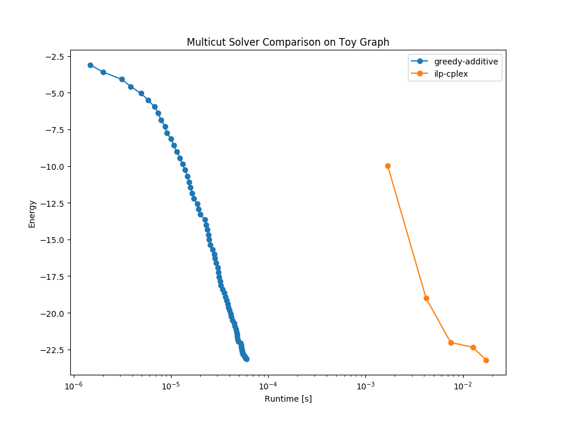

Multicut Logging Visitor¶
Compare multicut solvers on a graph with a random topology and random edge weights.
This example is NOT about the actual energies and runtimes since these random graphs with random weights are not very insightful. Furthermore the problem is to small to let CPLEX shine in comparison to GLPK. Here we want to show how to run solvers and log the runtime / energies.
from __future__ import print_function
# numpy
import numpy
# Plotting
import pylab
# nifty
import nifty
import nifty.graph.optimization.multicut as nifty_multicut
# a toy graph with random
# topology
numberOfNodes = 100
approxNumberOfEdges = 200
# random edges
uvIds = numpy.random.randint(low=0, high=numberOfNodes-1, size=approxNumberOfEdges*2)
uvIds = uvIds.reshape([-1,2])
uvIds = uvIds[uvIds[:,0]!=uvIds[:,1],:]
# setup graph
Graph = nifty.graph.UndirectedGraph
graph = Graph(numberOfNodes)
graph.insertEdges(uvIds)
# random edge weights
weights = numpy.random.rand(graph.numberOfEdges) -0.5
# construct a multicut objective
MulticutObjective = Graph.MulticutObjective
objective = MulticutObjective(graph, weights)
def runSolver(solverFactory):
""" run solver and return energies and runtimes"""
loggingVisitor = MulticutObjective.loggingVisitor(visitNth=1,verbose=0)
solver = solverFactory.create(objective)
result = solver.optimize(loggingVisitor)
energies = loggingVisitor.energies()
runtimes = loggingVisitor.runtimes()
return energies,runtimes
# store results for each solver
results = dict()
# greedy-additive
solverFactory = MulticutObjective.greedyAdditiveFactory()
results['greedy-additive'] = runSolver(solverFactory)
if nifty.Configuration.WITH_QPBO:
# cgc
solverFactory = MulticutObjective.cgcFactory(True,True)
results['cgc-qpbo'] = runSolver(solverFactory)
# greedy-additive + cgc
solverFactory = MulticutObjective.chainedSolversFactory([
MulticutObjective.greedyAdditiveFactory(),
MulticutObjective.cgcFactory(True,True)
])
results['greedy-additive + cgc-qpbo'] = runSolver(solverFactory)
if nifty.Configuration.WITH_CPLEX:
solverFactory = MulticutObjective.multicutIlpCplexFactory()
results['ilp-cplex'] = runSolver(solverFactory)
if nifty.Configuration.WITH_GUROBI:
solverFactory = MulticutObjective.multicutIlpGurobiFactory()
results['ilp-gurbi'] = runSolver(solverFactory)
if nifty.Configuration.WITH_GLPK:
solverFactory = MulticutObjective.multicutIlpGlpkFactory()
results['ilp-glpk'] = runSolver(solverFactory)
# plot the results
# increase default figure size
a,b = pylab.rcParams['figure.figsize']
pylab.rcParams['figure.figsize'] = 1.5*a, 1.5*b
for key in results.keys():
(runtimes,energies) = results[key]
pylab.semilogx(energies, runtimes, label=key, marker='o')
pylab.title('Multicut Solver Comparison on Toy Graph')
pylab.xlabel('Runtime [s]')
pylab.ylabel('Energy')
pylab.legend()
pylab.show()
Total running time of the script: ( 0 minutes 0.089 seconds)